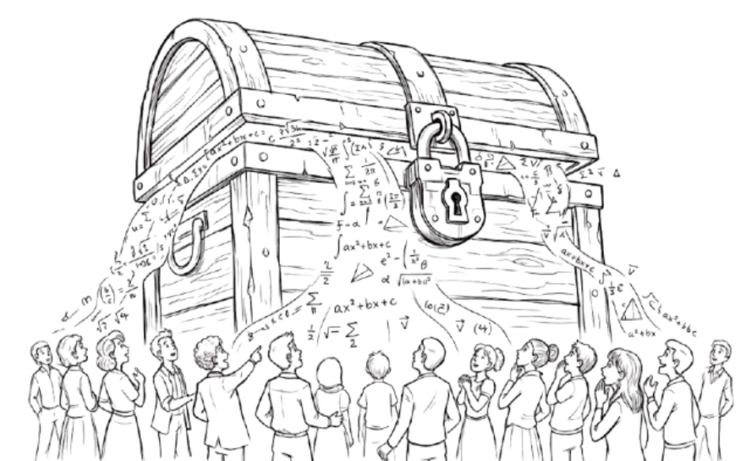
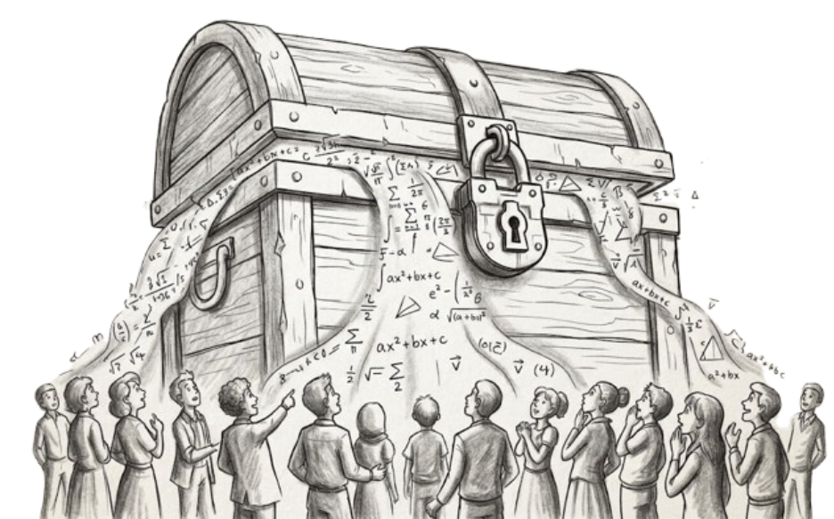

The Impact of AI
on Mathematics
A data visualization project exploring how artificial intelligence is reshaping research, capabilities, and the social fabric of mathematical discovery.
A data visualization project exploring how artificial intelligence is reshaping research, capabilities, and the social fabric of mathematical discovery.


03 — Social Impact
Who owns Discovery?
The shift toward AI-assisted mathematics raises fundamental questions about authorship, accessibility, and the concentration of power. Who controls the tools that discover new proofs, and who has access to the results?